How I work — designed in Figma, shipped in SwiftUI
We're two people with no handoff: I design the product and ship my own design changes into the app with AI. Here are three examples of what that looks like.
Overview
We split the work by layer: my co-founder owns everything under the hood, and I own the product surface — research, UX/UI, the marketing site, App Store, analytics and QA. I ship my design changes straight into the same codebase with AI (Claude Code, Gemini and ChatGPT, from the terminal).
1 · A restyle, shipped screen by screen
When iOS 26 arrived I restyled the app for Liquid Glass in code, one surface at a time: calendar, plans, activity, workout setup, the watch. My co-founder added the fallbacks that keep older iOS versions looking right, and the restyle shipped in April 2026.
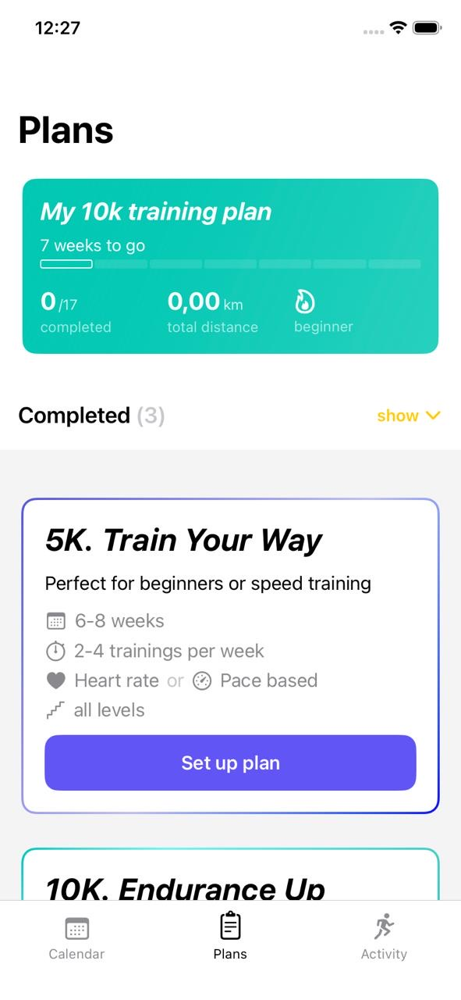
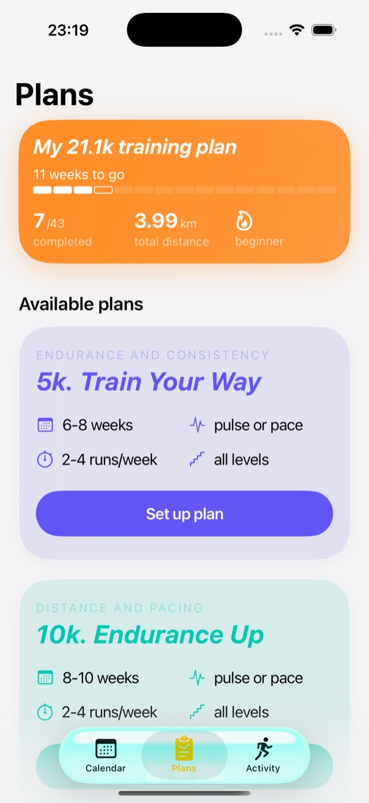
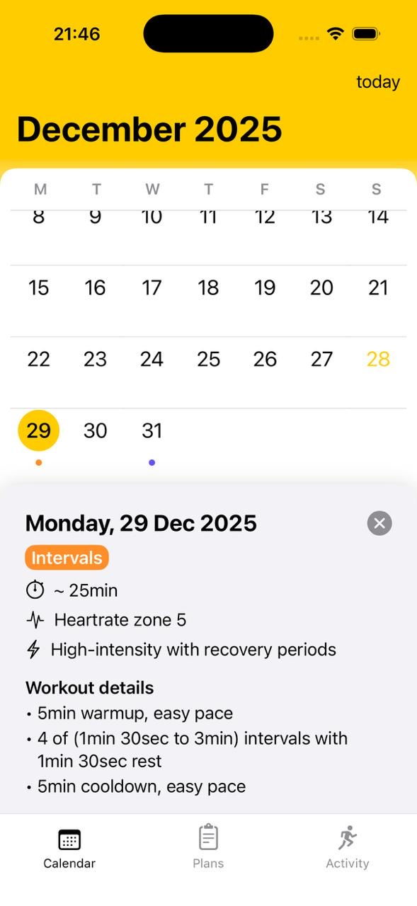
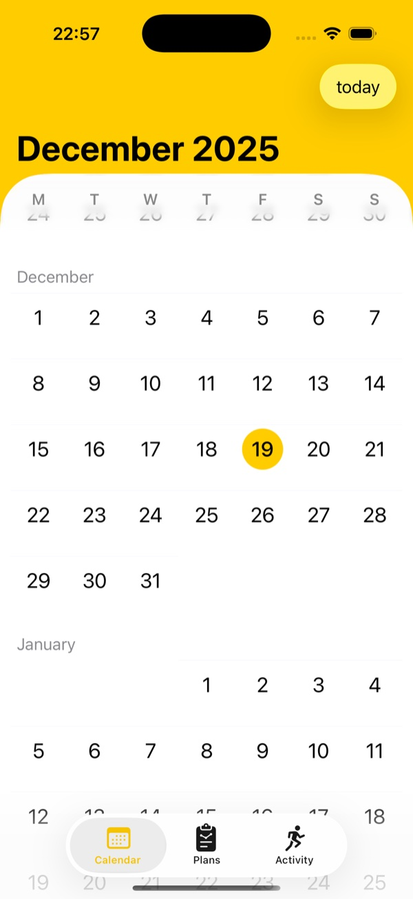
Plans and calendar, before and after: iOS 18 on the left of each pair, iOS 26 with Liquid Glass on the right.
2 · A design system that lives in the code
In July I built the design system into the codebase: type, color families, buttons, badges, cards, and a shared scaffold for sheets and popups. It comes with a hidden gallery screen in debug builds that renders every component live, in light and dark, and marks where the app still diverges from the system.
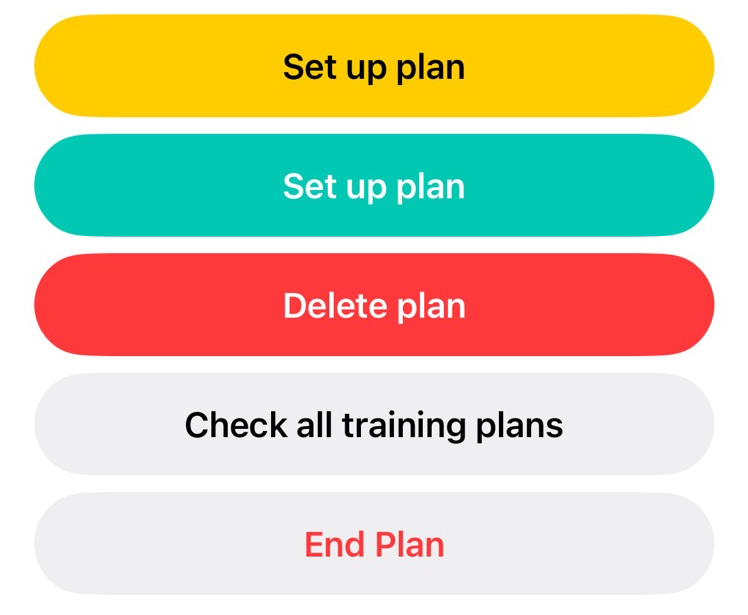
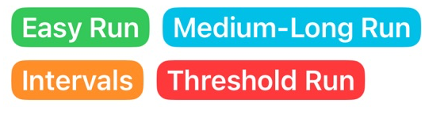
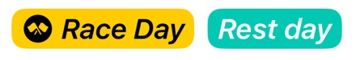
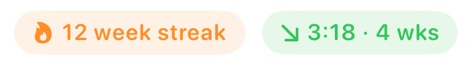
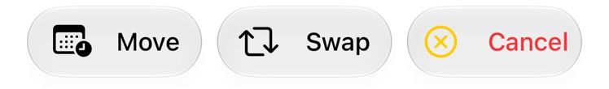
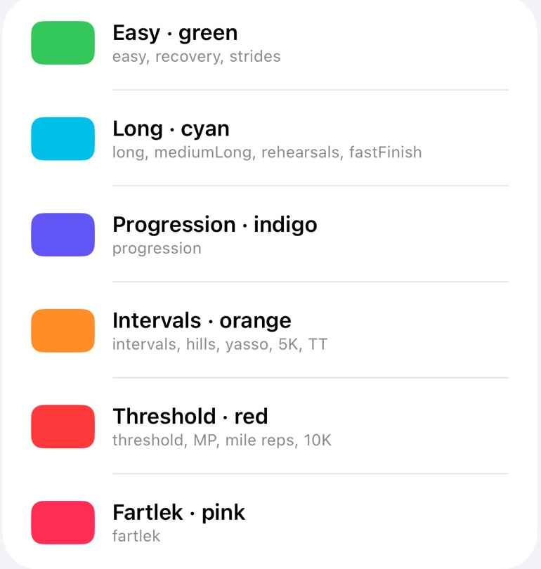
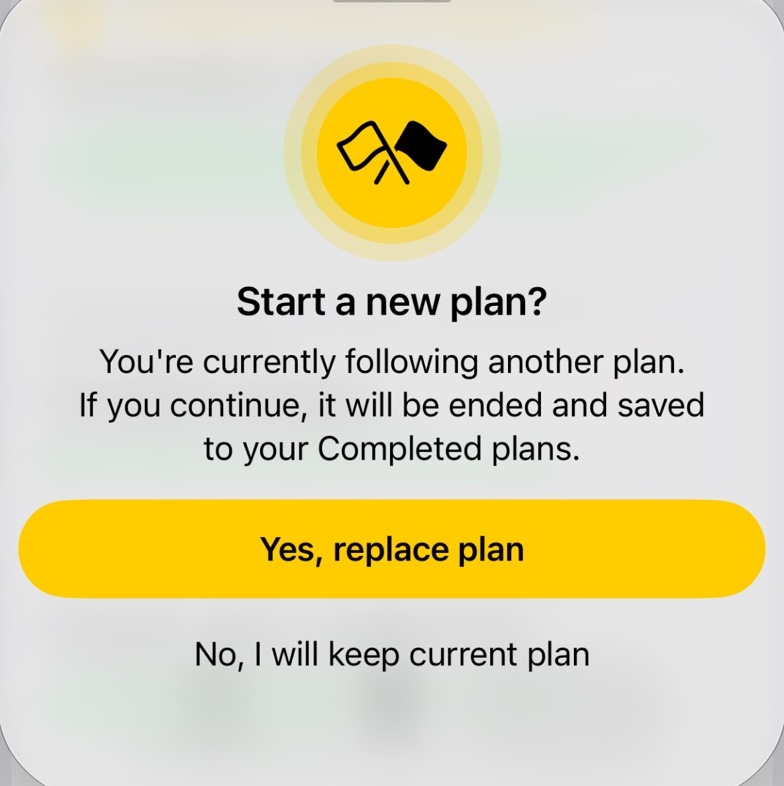
From the in-app gallery: buttons, workout badges and chips, color families, the confirmation sheet.
3 · Features built end to end
- Live Activity: the watch run mirrored on the Lock Screen and in the Dynamic Island, with pause and resume from the phone.
- Widgets: today's run on the Home Screen and as a card in the watch's Smart Stack.
- Progress charts: my co-founder computes the forecast and training load; I designed the screen and built the charts you can scrub, with a haptic tick on each data point.
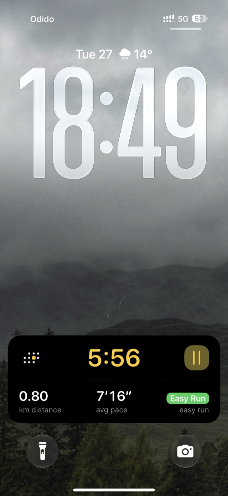
Small decisions, written down
Most of my commits are small product decisions, like these two from this autumn:
- The plan header said "0 weeks to go" a week before a Sunday race. It now says "Race this week".
- When our Strava connection limit was reached, the eleventh runner saw "Something went wrong" and a "Try again" button that couldn't help. Now it says "Strava is reviewing RunPlan, check back soon".
The longest chain of decisions like these is in Voice Cues →
What it changes
- Small things get done. A wrong word or an off-by-one label doesn't wait in a backlog, because I can fix it as soon as I notice it and it ships with the next build.
- The design system can't drift quietly. It's in the same codebase as the app, and the gallery shows where the two differ.
- Each of us ships our own layer. My co-founder owns how the plan is computed, and I own how the app looks, reads and behaves, which means I can ship it myself.